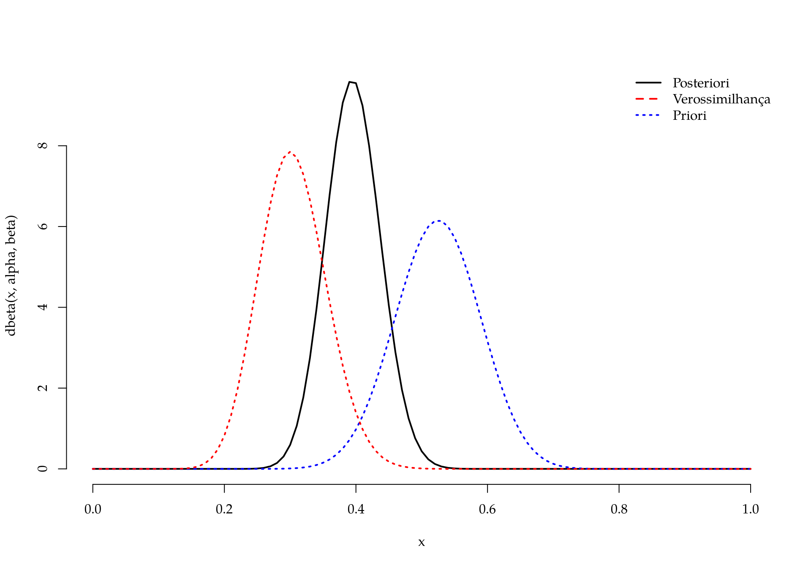
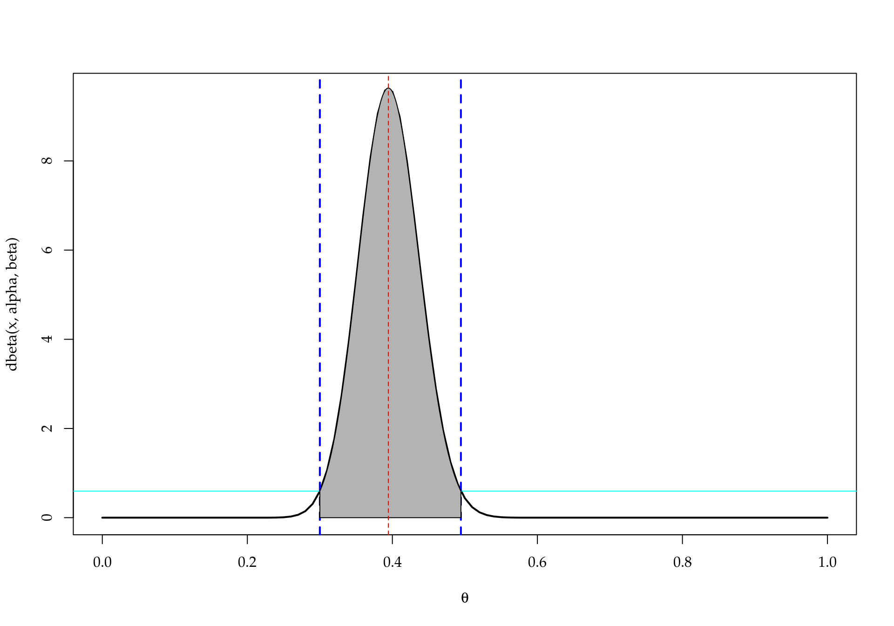
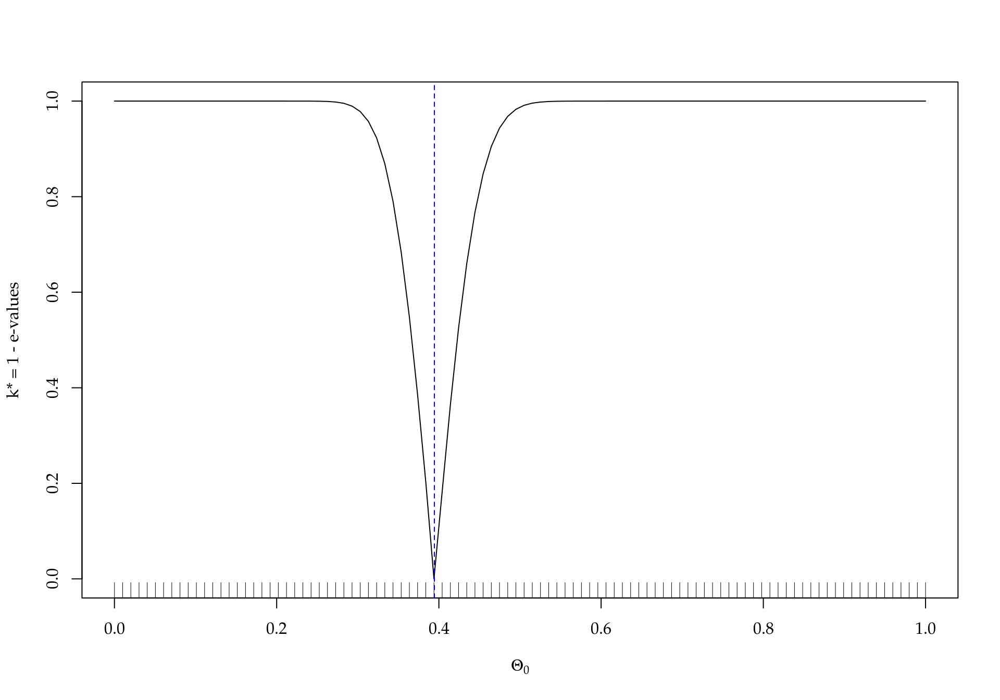

FBST - Full Bayesian Significance Test
Ideias iniciais
“Prof. Julio Stern sobre o Prof. Carlos Alberto de Bragança Pereira - FBST Full Bayesian Significance Test. Me ensinou quase toda a estatística que eu sei (isso foi fácil) depois de des-ensinar quase toda a estatística que eu pensava que sabia (bem mais difícil)!”
“Fornecer uma teoria intuitiva, coerente e conveniente para acessar a significância estatística de hipóteses precisas.”3
A metodologia FBST baseia-se na avaliação de ev(H|X), ou e-value evidência da hipótese precisa H sob a obtenção da amostra X. Ainda conforme4, esta metodologia com suporte no e-value apresenta propriedades desejáveis como:
Fornecer uma funcão de suporte à (ou medida de significância estatística da) hipótese em teste, idealmente uma medida de probabilidade no espaço paramétrico original ou natural do problema;
Ter uma definicão intrinsecamente geométrica, independente de qualquer aspecto não geométrico, como a particular parametrizaçao da hipótese sendo testada, ou o particular sistema de coordenadas escolhido para o espaço paramétrico, i.e., ser um procedimento invariante;
Fornecer uma função de suporte que seja suave, i.e. contínua e diferenciável, nos parâmetros da hipótese e nas estatísticas da amostra, dentro de condições apropriadas de regularidade do modelo;
Obedecer ao princípio da verossimilhança, i.e. a informação obtida das observações deve ser representada pela, e apenas pela, função de verossimilhança;
Não requerer qualquer artifício ad hoc, como dar probabilidades positivas a conjuntos de medida nula, ou estabelecer razões de crença iniciais arbitrárias entre hipóteses;
Ser uma função de suporte possibilística, onde o suporte a uma disjunção lógica é o máximo entre o suporte dos disjuntos;
Ser um procedimento exato, i.e., não utilizar na definição do e-valor qualquer aproximação assintótica;
Fornecer um teste consistente para uma dada hipótese precisa;
Fornecer operações de composicionalidade para modelos complexos;
Permitir a incorporação de experiência prévia ou opiniões de especialistas via distribuições a priori.
Veja o material original de Julio Stern 5, onde para cada propriedade listada, uma publicação que a embasa é apresentada.
\(\Xi\): Espaço amostral; \(\Delta\): Espaço observável; \(\Theta\): Espaço paramétrico.
Hipótese precisa H, (\(\,g(\theta) \leq c \wedge h(\theta) = c\, , \textrm{sendo } c \textrm{ uma constante})\), tal que, \(\Theta_0 = \{\theta \in \Theta: H\}\).
\(f(\theta | d)\) é a densidade posteriori obtida.
\(T_\varphi = \{ \theta \in \Theta \mid f(\theta | d) > \varphi \}\), subespaço paramétrico onde a densidade posteriori é superior a \(\varphi\)
\(\mathbf{k}(T_\varphi) = \int_{T_\varphi} f(\theta | d)d\theta\) é a credibilidade de \(T_\varphi\) na posteriori.
Encontre \(\theta^* = \arg \underset{\theta \in \Theta_0}{\max}f(\theta | d)\)
Obtenha a densidade posteriori no ponto \(\theta^*\), \(f^* = f(\theta^* | d )\)
Obtenha o subespaço \(T* = T_{f^*}\)
Calcule a credibilidade de \(\mathbf{k}^* = \mathbf{k}(T_{f^*})\)
Calcule o e-value sobre H dado X, \(ev(H | X) = 1 - \mathbf{k}^*\)
Exemplo 6.3 apresentado no artigo publicado na Bayesian Analysis6
No gif abaixo têm-se a ilustração da metodologia FBST aplicada a um conjunto de dados distribuídos normalmente com \(\mu\) e \(\tau\) desconhecidos. Atribuindo uma priori extremamente vaga ao vetor de parâmetros, i.e \((\mu, \tau) \in \Re \times \Re\), obtemos a densidade posteriori:
\[ f(\mu, \tau) = \tau^{6.5} \exp \left \{ -\frac{15\tau(\mu - 0.9)^2}{2} \right \} \]
As hipóteses precisas a serem testadas são:
##======================================================================
## Obtendo a priori
betaPrior <- function(P, LI, LS, CONF = 0.80) {
## P = proporção ("estimativa" pontual)
## LI, LS = limite inferior e superior para proporção
## CONF = confiança do intervalo descritvo
fobj <- function(alpha) {
beta <- (alpha * (1 - P) - 1 + 2 * P)/P
prob <- diff(pbeta(q = c(LI, LS), alpha, beta))
(prob - CONF)^2
}
alpha <- optimize(fobj, c(1, 100))$minimum
beta <- (alpha * (1 - P) - 1 + 2 * P)/P
return(list(alpha = alpha, beta = beta))
}
(prior <- betaPrior(0.525, 0.4, 0.65, 0.95))## $alpha
## [1] 31.38933
##
## $beta
## [1] 28.4951##======================================================================
## Obtendo a verossimilhanca
y <- 24 ## Numero de eleitores com intenção de votar no atual prefeito
n <- 80 ## Numero de eleitores consultados
(veros <- list(alpha = y + 1, beta = n - y + 1))## $alpha
## [1] 25
##
## $beta
## [1] 57##======================================================================
## Obtendo a posteriori (analiticamente)
(poste <- list(alpha = y + prior$alpha, beta = n - y + prior$beta))## $alpha
## [1] 55.38933
##
## $beta
## [1] 84.4951(mode <- with(poste, (alpha - 1)/(alpha + beta - 2)))## [1] 0.3944559##======================================================================
## Resultado da análise
par(lwd = 2, bty = "n")
with(poste, curve(dbeta(x, alpha, beta), from = 0, to = 1))
with(prior, curve(dbeta(x, alpha, beta), add = TRUE, lty = 3, col = 4))
with(veros, curve(dbeta(x, alpha, beta), add = TRUE, lty = 3, col = 2))
legend("topright", col = c(1, 2, 4), lty = 1:3, bty = "n",
legend = c("Posteriori", "Verossimilhança", "Priori"))
Testando as hipóteses \(H_0: \theta = 3\) contra \(H_1: \theta \neq 3\)
attach(poste)
## FBST para exemplo simples (muito simples)
theta0 <- 0.3
f0 <- dbeta(theta0, alpha, beta)
t02 <- uniroot(function(x) dbeta(x, alpha, beta) - f0,
interval = c(0.4, 1))
(T0 <- c(0.3, t02$root))## [1] 0.3000000 0.4945294(k0 <- diff(pbeta(T0, alpha, beta)))## [1] 0.9823365(ev <- 1 - k0)## [1] 0.01766348## Graficamente
curve(dbeta(x, alpha, beta), xlab = expression(theta), lwd = 2)
abline(v = theta0, col = 4, lty = 2, lwd = 2)
##
abline(h = f0, col = 5)
##
abline(v = T0, col = 4, lty = 2, lwd = 2)
##
x <- seq(T0[1], T0[2], length.out = 100)
fx <- dbeta(x, alpha, beta)
polygon(c(x, rev(x)),
c(fx, rep(0, length(fx))),
col="gray70")
abline(v = mode, col = 2, lty = 2)
detach(poste)Avaliando o “poder do teste” com os dados do exemplo, supondo que o \(\theta\) “”verdadeiro“” seja o valor modal da posteriori.
## Função para calcular o valor de evidência FBST, especifico ao
## problema verossimilhança Binomial, priori Beta
f.ev <- function(theta, posterior) {
with(posterior, {
f0 <- dbeta(theta, alpha, beta)
T0 <- rootSolve::uniroot.all(
function(x) dbeta(x, alpha, beta) - f0,
interval = c(0, 1))
if (length(T0) == 0) {
return(evalor = 1)
} else {
k0 <- diff(pbeta(T0, alpha, beta))
ev <- 1 - abs(k0)
return(evalor = ev)
}
})
}
thetas <- seq(0, 1, length.out = 100)
evalues <- unlist(sapply(thetas, f.ev, posterior = poste))
plot(y = 1 - evalues, x = thetas, type = "l",
xlab = expression(Theta[0]),
ylab = "k* = 1 - e-values")
abline(v = mode, col = 4, lty = 2)
rug(thetas)
Artigo que propõe o FBST http://www.mdpi.org/entropy/papers/e1040099.pdf↩
Artigo que consolida a metodologia FBST http://computacao.br/~jstern/papers/papersJS/jsbayan1.pdf↩
Aula de Erudição (Textos de memorial por Julio Stern) https://www.ime.usp.br/~jstern/vitae/jmst2.pdf (texto pleno)↩
Aula de Erudição (Textos de memorial por Julio Stern) https://www.ime.usp.br/~jstern/vitae/jmst2.pdf (texto pleno)↩
Aula de Erudição (Textos de memorial por Julio Stern) https://www.ime.usp.br/~jstern/vitae/jmst2.pdf (texto pleno)↩
Artigo que consolida a metodologia FBST http://computacao.br/~jstern/papers/papersJS/jsbayan1.pdf↩